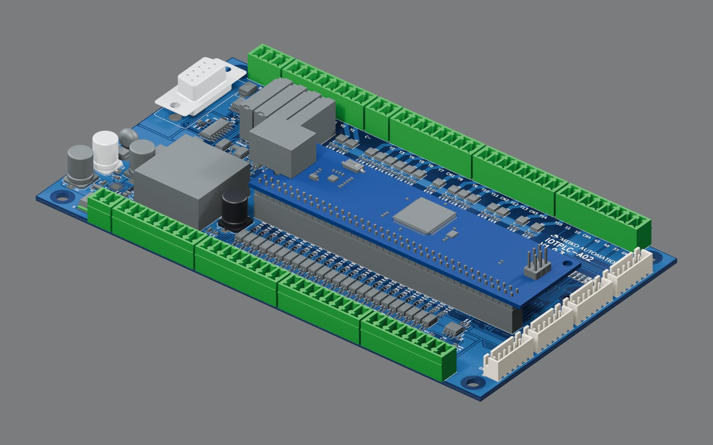

Tool / JIG ICT & FCT Đồ gá và tự động hóa kiểm thử cho line sản xuất.
Tool / JIG ICT & FCT là nhóm giải pháp giới thiệu năng lực thiết kế đồ gá, tự động hóa kiểm thử và hỗ trợ line sản xuất. Trang hiện cung cấp hình ảnh đại diện và hướng liên hệ kỹ thuật; chưa có catalogue hoặc case study chi tiết.
Nội dung tạm: thông tin sản phẩm đang được hoàn thiện và cần xác nhận cùng đội kỹ thuật.

Điểm chính
- 01
ICT và FCT
Hỗ trợ các hạng mục ICT, FCT và đồ gá kiểm thử.
- 02
Tự động hóa kiểm thử
Giới thiệu năng lực tự động hóa kiểm thử cho line sản xuất.
- 03
Flashing firmware
Các hạng mục sử dụng gồm flashing firmware, xác nhận chức năng và kiểm soát chất lượng trên line.
- 04
Trao đổi kỹ thuật
Liên hệ để trao đổi yêu cầu kỹ thuật hoặc ODM.
Thông số kỹ thuật
Thông số chi tiết đang được hoàn thiện. Hãy trao đổi với đội kỹ thuật để nhận cấu hình phù hợp.
Ứng dụng
- Kiểm thử ICT trên line sản xuất.
- Kiểm thử chức năng FCT.
- Nạp firmware và xác nhận chức năng.
Sản phẩm liên quan

Cần cấu hình cho dự án của bạn? Trao đổi với đội kỹ thuật Meiko.
Yêu cầu tư vấn / báo giá